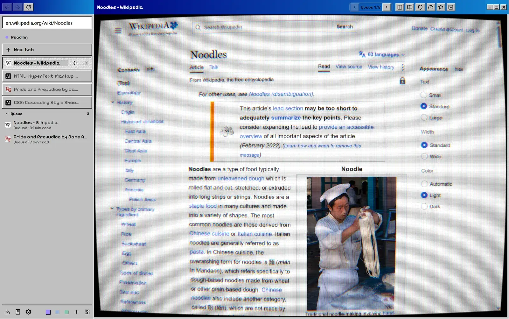

Noodle 0.1.0 for Windows
A lightweight browser for watching, reading and getting things done.
Tabs live in a sidebar, grouped into spaces. Two tabs can share the window, every space has a canvas board, and old video files play without a codec hunt. Noodle collects no data, and ad blocking is on from the first start.
- Ctrl+K command palette
- Ctrl+Shift+\ split view
- Ctrl+Shift+E canvas
- F9 reader view

01 / Why
Noodle started with a short wish list. Open fast. Keep tabs tidy in spaces. Play the odd old video file without a fuss. Never phone home. Along the way it picked up a canvas board, a reader, a curved CRT screen and a server for AI agents. It still opens fast.
02 / The board
Every space gets a board. Here's one.
In Noodle, tabs, notes and pictures sit on an infinite canvas. This one holds the features. Drag the cards around, or open one to look closer.
Queue 2
Big Buck BunnyQueued, 10 min watch
Pride and PrejudiceQueued, 2 min read
 Split view
Split view
 Command palette
Command palette
Alt S saves the page you are on to the board.
 Canvas board
Canvas board
 Downloads
Downloads
 Media player
Media player
That folder of old AVI files? It plays.
 Reader view
Reader view
 Image editor
Image editor
03 / Skins
Bring back 1998, curved glass and all.
Nine skins ship with Noodle, and a skin restyles the whole window. Turn on the CRT screen and the page bends and gains scanlines, and every click still lands on the right spot.
This site has a few of them. Try one on:


04 / Agents
Let an agent drive. You keep the brakes.
Noodle has a built-in MCP server. It is off until you turn it on, listens only on 127.0.0.1 and needs a token. Agents get compact page snapshots and batched actions, so they finish in fewer turns.
Purchases, sending messages and a first form submit on a site stop at an approval card in the sidebar. Ctrl+Shift+. stops every agent at once.
05 / Privacy
Your browsing stays on your machine.
No data collection
No telemetry, analytics, crash reports or accounts. There is no Noodle server to send anything to.
Ads blocked from the start
Ad and tracker blocking is on the first time you open Noodle. Third-party cookies and ad APIs are off too.
An encrypted profile
History, bookmarks, settings and the canvas are kept in a database encrypted with ChaCha20 on your own disk.
Slurp responsibly.
Noodle is free and open source, and it arrives on Windows on 5 November. macOS and Linux builds come from the same code but haven't been tested yet.